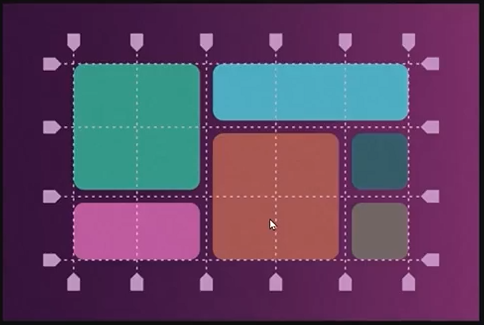

O grid (grade) é um sistema bidimensional baseado em grades. Ele serve para que possamos criar as sessões para o nosso layout.

O grid também tem aplicações em containes, como e flex visto antes. Então, tem propriedades que serão aplicadas no pais e propriedades que serão aplicadas nos filhos.
O grid pode começar sendo escrito tanto como: display: grid ou display: inline-grid. A diferença que o display grid vai deixar tudo preenchendo o tamanho total do container e o inline-grid vai deixa-los do mesmo tamanho, usando como referência o maior item.
A segunda parte é definir o grid template, com isso vamos definir as linhas e colunas do grid. Usando o grid-template-columns vamos definir o tamanho das colunas, podemos passar o valor 'auto', com isso vamos dizer que queremos uma coluna com o tamanho auto ou passar esse valor 2x e vamos ter duas colunas com valor 'auto'. Também podeos passar valores como pixels e porcentagem.
Também temos o grid-template-rows que faz com que trabalhemos com as linhas. Os valores aplicados são postos em cada linha, se quisemos ter uma linha com 150px assim ficará. Caso queira mais linhas basta repetir o valor "grid-template-rows: 150px 150px;".